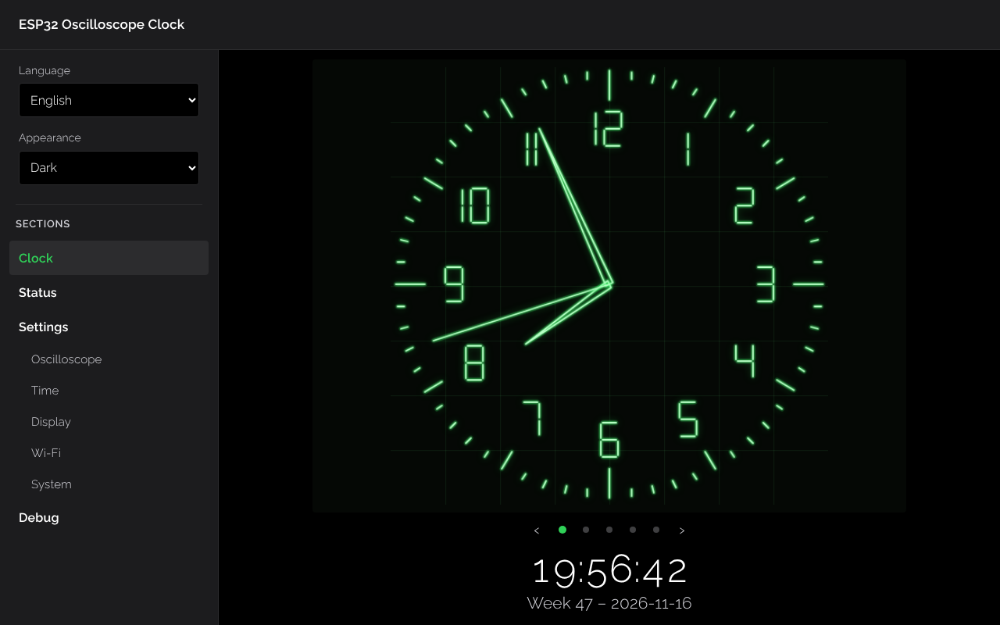
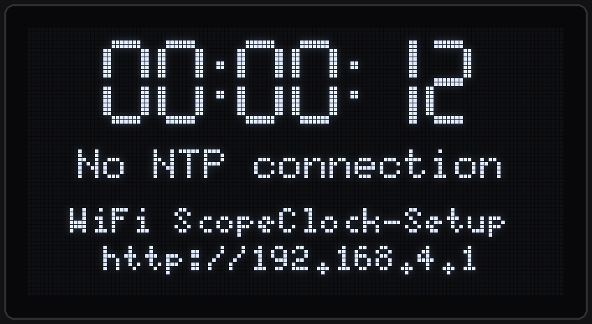
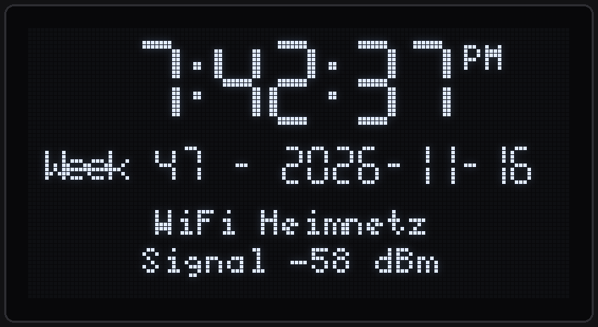
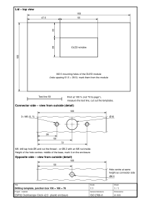

ESP32 Oscilloscope Clock v2.0
Vector clock for an oscilloscope in X/Y mode
with Wi-Fi, time server, OLED display and web interface
with Wi-Fi, time server, OLED display and web interface
config.h, interfaces, origin and licencesThe ESP32 Oscilloscope Clock draws an analogue clock on the screen of an oscilloscope. The oscilloscope works in X/Y mode: two voltages deflect the beam horizontally and vertically. An ESP32 generates these two voltages with its built-in digital-to-analogue converters (DACs) and traces the dial, numerals and hands about 230 times per second.



The list matches the prototype. The signals do not leave the enclosure through panel sockets but through BNC pigtail cables that are led through the enclosure wall with cable glands. The BNC plug at the end goes straight into the oscilloscope input; no additional BNC cable is needed.
| Qty | Part | Note |
|---|---|---|
| 1 | ESP32-WROOM-32U DevKitC V4 with USB-C and antenna kit (DUBEUYEW, “2 pcs ESP32-WROOM-32U ESP32 DevKitC V4 USB-C with antenna kit”), 48.5 × 28.5 mm | Classic ESP32 with two 8-bit DACs on GPIO25/26, USB-serial converter CP2102. The antenna kit contains the IPEX→SMA pigtail. Other ESP32 variants (S2, S3, C3) have no or different DACs and do not fit. |
| 1 | ESP32 breakout board with screw terminals (XTVTX, “ESP32 breakout board expansion board GPIO 1 in 2”, pack of 2) | The DevKit is plugged in and all wires go into screw terminals – nothing is soldered on the DevKit. The terminals are labelled like the pins (3V3, GND, P25, P26, P23 …). |
| 2 | BNC pigtail cable, BNC plug to 2.54 mm DuPont pin, RG316 (TEJIATE, “SMA to DuPont BNC/Q9/N … RG316”, variant BNC-J to J) | X and Y. Choose the length to suit the distance to the oscilloscope (30–80 cm available; 50 cm is a good choice). Red = core (signal), brown = shield (ground) – confirm with a continuity tester. |
| 2 | Cable gland Lapp SKINDICHT MINI M6×1, nickel-plated brass, clamping range 2–3 mm, IP68 (Lapp 52001860, RS 458-3953) | One per pigtail; holds and seals the RG316 (approx. Ø 2.5 mm) in the enclosure wall. |
| 1 | USB-C panel-mount extension USB 3.1, IP67, 0.2 m, plug to socket, FPC flat cable, 16 mm cut-out (Plinkwirekb) | USB-C socket in the enclosure wall; the flat cable plugs into the DevKit inside. It powers and programs the clock. |
| 1 | ABS junction box 150 × 100 × 70 mm, IP67, with hinged lid, stainless steel latches and mounting plate (Yunseity) | Plastic so that the Wi-Fi signal gets through. The breakout board is screwed onto the perforated mounting plate. |
| 1 | Waveshare 2.42inch OLED display module, white, 128 × 64 pixels, SPI/I²C (SSD1309); board 61.5 × 39.5 mm, active area 55.0 × 27.5 mm | Optional – the clock also runs without a display. Use as delivered (4-wire SPI), no resoldering. Pin header from the bottom: VCC, GND, DIN, CLK, CS, DC, RST. |
| 1 | Wi-Fi antenna Bingfu 2.4/5.8 GHz, 8 dBi, SMA plug (variant “SMA”), angled | Mandatory: the -32U module has no built-in antenna. It screws onto the SMA socket of the IPEX pigtail from the antenna kit – do not mix SMA and RP-SMA (the antenna plug must match the pigtail socket). |
| 2 | Resistor 220 Ω, 0.25 W (recommended) | Soldered into the red lead of each pigtail; protects the DAC outputs if the BNC plug is short-circuited. |
| (1) | Optional: real-time clock DS3231, module ZS-042 (e.g. WINGONEER “Tiny DS3231 AT24C32”) | Keeps the time after a power failure without internet. VCC → 3V3, GND → GND, SDA → P21, SCL → P22. Coin cell: normal CR2032 – connect the module to 3V3 only (at 5 V its charging circuit would charge it). Switch on in the web interface. |
| – | Small parts | 7 wires for the OLED (DuPont cables or stranded wire), heat-shrink tubing, standoffs M2.5 (OLED) and M3 (breakout board), possibly 2–3 M6 nuts |
| 1 | USB power supply 5 V, ≥ 1 A, with USB-C cable | A normal, unearthed plug-in power supply avoids ground loops. |

| Terminal on the breakout board | Connection | Target | Function |
|---|---|---|---|
| P25 (GPIO25, DAC1) | via 220 Ω | pigtail “X”, red lead → oscilloscope channel 1 | analogue output DAC1: voltage for the X deflection |
| P26 (GPIO26, DAC2) | via 220 Ω | pigtail “Y”, red lead → oscilloscope channel 2 | analogue output DAC2: voltage for the Y deflection |
| GND (left row) | direct | brown leads (shield) of all pigtails | ground – reference of the deflection voltages |
| 3V3 | direct | OLED VCC | 3.3 V supply for the OLED |
| GND (right row) | direct | OLED GND | OLED ground |
| P23 | direct | OLED DIN | SPI data (VSPI MOSI): image content to the display |
| P18 | direct | OLED CLK | SPI clock (VSPI SCK) |
| P5 | direct | OLED CS | chip select, low = OLED addressed |
| P17 | direct | OLED DC | data/command: high = image data, low = command |
| P4 | direct | OLED RST | display reset (active low) |
| P21 / P22 · 3V3 · GND | direct | optional: DS3231 real-time clock – SDA / SCL · VCC · GND | I²C data / I²C clock · supply · ground |
| IPEX socket on the module | antenna pigtail | SMA socket in the opposite side → antenna | Wi-Fi signal 2.4 GHz |
| USB-C of the DevKit | flat cable | USB-C panel socket in the connector side | 5 V supply, firmware upload, serial monitor |

ESP32_OscilloscopeClock_v2.0/ESP32_OscilloscopeClock_v2.0.ino and upload it.| Variant | Arduino IDE: Partition Scheme | PlatformIO | Program memory |
|---|---|---|---|
| A – Huge APP (recommended) | “Huge APP (3MB No OTA/1MB SPIFFS)” | pio run -t upload | 1,241,138 of 3,145,728 bytes (39 %) |
| B – Standard | “Default 4MB with spiffs (1.2MB APP/1.5MB SPIFFS)” – the default, nothing to change | pio run -e standard -t upload | 1,241,106 of 1,310,720 bytes (94 %) |
Both variants work the same. A leaves about 1.9 MB for extensions; the clock uses neither OTA updates nor SPIFFS, so nothing is lost. B works without changing anything but leaves only about 70 KB. You can switch at any time (choose the scheme, upload again) – saved networks and settings are stored at the same place in both and are kept. If the IDE reports “Sketch too big” when uploading, variant B is selected: switch to A.
config.h; during operation the web interface is more convenient.The source of the web page is web/index.html. After changes run python3 tools/gen_webpage.py:
the script removes comments, compresses the page with gzip and writes webpage.h (approx. 24 KB instead of 82 KB in flash).
http://192.168.4.1. The Wi-Fi group is then already expanded:
“Search for networks in range”, tap your network, enter the password, “Save network”.


How to use the test pattern:
The test pattern is not saved. It appears automatically for 10 seconds after every power-on (BOOT_TEST_S).
| Setting | Value | Reason |
|---|---|---|
| Mode | X/Y | Channel 1 deflects horizontally, channel 2 vertically |
| Coupling | DC, both channels | The signals have a DC component (0–3.2 V) |
| Sensitivity | 0.5 V/div, both the same | 8 divisions = 4 V, the 3.2 V picture fits |
| Position/offset | centre of the screen, approx. −1.6 V | DAC centre ≈ 1.6 V |
| Time base (digital) | 1 ms/div | One acquisition window covers whole clock frames (approx. 4.3 ms per frame) |
| Trigger (digital) | Auto | The clock provides no trigger event |
| Persistence | short to medium, if available | smooths the picture build-up |
| Bandwidth limit | on (e.g. 20 MHz) | less noise |
An analogue oscilloscope draws in real time; a digital one first samples both channels and then displays the values as dots or connected dots. This leads to a few differences:
The hour and minute hands are narrow needles made of two closely spaced edges. Depending on how an oscilloscope displays brightness, they look brighter than or as bright as the rest. The hour/minute hand brightness slider (Settings → Oscilloscope, 55 % by default) compensates for this. Guide values:
How to set the value exactly (with other devices start at 55 %): first set focus and intensity on the oscilloscope. Then look at where the hands cross the minute marks and move the slider in 5 % steps until both look equally bright; briefly going to 100 % and back shows the direction. The value is applied and saved immediately.
Open http://scope-clock.local (name can be changed under Settings → System) or the IP address. The page is made for phones and can be added to the home screen like an app (“Add to home screen”).


At the top the time in 7-segment style, below it the calendar week and date with small 7-segment digits, then the Wi-Fi network and the signal strength. Without a valid time it shows “No NTP connection”; in the setup network it shows the network name “ScopeClock-Setup” and the address. Brightness 0–100 %, seconds, rotation by 180° and pixel shifting against burn-in can be set.


Holding it for 3 seconds switches the oscilloscope profile (DIGITAL ↔ ANALOG). The OLED shows the change with a countdown 3, 2, 1; releasing earlier cancels (Fig. 13 and 14). The setting is saved. Do not press it while powering on – otherwise the ESP32 starts in download mode.

Factory reset: hold for 10 seconds. From 5 s the OLED counts down 5 … 1 (Fig. 12), then all settings and networks are erased and the clock restarts with the setup network. Releasing earlier cancels.
All settings take effect immediately – on the oscilloscope, on the OLED and in the preview – and are saved permanently on
the clock (exception: test pattern). Sliders only send when released so that the memory is not written on every movement. Each
group has “Reset to defaults”; the change can then be undone with “Undo” for 8 seconds. The defaults come from config.h.
| Setting | Range (default) | Effect |
|---|---|---|
| Oscilloscope profile | DIGITAL / ANALOG (DIGITAL) | Defines how the beam jumps between two lines. DIGITAL jumps instantly: a storage oscilloscope then shows no sample points along the way that would be visible as a trace. ANALOG jumps fast, brakes shortly before the target and lands cleanly at the start of the line – this gives the faintest retrace line on a CRT. Can also be switched with the BOOT button (hold for 3 s). |
| Test pattern | on / off (off) | Shows a frame with marks, a circle and a centre cross instead of the clock. Used to set position, size, equal gain of X and Y (circle round instead of oval) and focus. Not saved; appears automatically for 10 seconds after power-on. |
| Dial | 5 styles (numerals 1–12) | Numerals 1–12, only 12·3·6·9, ticks only, Roman XII·III·VI·IX or Roman I–XII. Changes immediately on the oscilloscope; also by swiping over the preview. Fewer numerals mean a shorter frame and therefore a higher frame rate (less flicker). |
| Change dial automatically | off, every minute, every 5 / 15 minutes, every hour (off) | Shows all five dials one after the other. The setting and the dial shown are saved: after power-on the change continues with the dial shown last. |
| Image shift against burn-in | on / off (on) | Every minute the whole picture moves on by up to 2 steps (about 0.4 mm) on a small circle, so that the phosphor of a CRT does not always wear at the same spots – also on digital instruments with a CRT; unnecessary but harmless with an LCD. The test pattern always stays still. |
| Beam dwell time | 1.00–10.00 µs per step (3.00 µs) | How long the beam dwells on each piece of its path. Longer = brighter, stronger lines and cleaner corners, but fewer frames per second (more flicker). Shorter = calmer picture but darker lines; a slow oscilloscope then rounds the corners. The estimated frame rate is shown while dragging (default approx. 230 frames/s). |
| Hour/minute hand brightness | 0–100 % (55 %) | Dwell time on the two hands relative to the rest. The narrow, closely spaced double lines of the hands otherwise look brighter than the dial and numerals. Guide values per oscilloscope and how to set it: chapter 6. 0 % hides the hands. The second hand is not affected. |
| Tick mark brightness | 0–100 % (100 %) | Brightness of the 60 marks around the edge. Less brightness makes the hands stand out more and shortens the frame slightly; 0 % hides the marks completely. |
| Numeral brightness | 0–100 % (100 %) | Brightness of the numbers on the dial. 0 % hides them – equivalent to the style “ticks only”. |
| Retrace speed | 0–48 (24) | Only in profile ANALOG: how fast the beam jumps between two lines (multiple of the drawing speed). Faster = fainter retrace line; if the oscilloscope is too slow for it, small “hooks” appear at the start of lines – then reduce the value (e.g. 12). 0 = instant jump. Greyed out in profile DIGITAL and with Z blanking; the value stays saved. |
| Z blanking (Z input) | on / off (off); high or low = dark (high) | Only with a third wire from GPIO27 (terminal P27) to the Z input of the oscilloscope – not part of the described build. Switches the beam off during every jump, the retrace lines disappear. Level as stated in the oscilloscope manual; when off, GPIO27 is high impedance. |
| Setting | Range (default) | Effect |
|---|---|---|
| Set time | device time or date + time | Only appears while no time server can be reached (e.g. without internet); the Time group then expands by itself. “Take over this device's time” sets the clock to the time of the phone/PC, alternatively date and time by hand. Summer/winter time automatically according to the time zone or fixed. The confirmation shows the time that was set. As soon as a time server is reachable, the clock sets itself again; after a restart the time must be set by hand again. |
| Time format | 24 h / 12 h (24 h) | Display on the OLED and on the web page; 12-hour format with AM/PM. The dial on the oscilloscope is independent of this, the debug log always stays at 24 h. |
| Time zone | list (Central Europe) | Determines the local time including the rules for summer and winter time. Takes effect immediately on the hands, OLED and web page. If the clock is off by whole hours, the time zone is usually wrong. |
| Real-time clock (RTC) | on / off (off) | Only with a DS3231 module connected (SDA GPIO21, SCL GPIO22). Keeps date and time with its coin cell even after a power failure without internet; updated at every time sync and when the time is set by hand. The status shows “Running”, “Not found” or “Time invalid” (battery empty or new). |
| Time server (NTP) | host name (de.pool.ntp.org) | Server on the internet from which the clock fetches the exact time – after start-up and then every hour.
“Apply” saves the name and synchronises immediately. Two more servers from config.h serve as a fallback. |
| Setting | Range (default) | Effect |
|---|---|---|
| OLED brightness | 0–100 % (50 %) | Brightness of the small display on the clock. Low values protect the OLED (less burn-in, longer life); 0 % switches it off completely. While the BOOT button is held, it is still switched on briefly to show the profile change. |
| Show seconds | on / off (on) | Time on the OLED as HH:MM:SS or only HH:MM. Without seconds the picture only changes once per minute – which protects the display even more. |
| Rotate OLED by 180° | on / off (off) | Turns the display upside down if it is mounted upside down in the lid. |
| OLED pixel shift | on / off (on) | Shifts the whole picture by a few pixels every minute so that permanently lit points (e.g. the colon) do not burn in. The shift is hardly noticeable. |
| Setting | Range | Effect |
|---|---|---|
| Saved networks | up to 10 | Networks the clock may connect to. It automatically chooses the strongest network in range. “Delete” removes a network; the clock restarts afterwards. Passwords are never shown. Without a Wi-Fi connection the group expands by itself. |
| Search for networks in range | – | Lists the nearby networks, strongest first, with bars and dBm; the connected network is marked. Tapping one copies its name into the form. |
| Add network | SSID 1–32, password empty or 8–63 characters | Saves a new network or a changed password (after a password change the clock restarts briefly). Leave the password empty for open networks. Then “Reconnect” so that the clock chooses the strongest network again. |
| Reconnect | – | Briefly disconnects and connects to the strongest known network; the page is unreachable for a few seconds. |
| Reset Wi-Fi | – | Deletes all saved networks after confirmation. The clock restarts and opens the setup network “ScopeClock-Setup” for a new set-up. |
| Setting | Range (default) | Effect |
|---|---|---|
| Device name | a–z, 0–9, hyphen, max. 32 (scope-clock) | Name of the clock in the router and address in the browser: http://<name>.local. Applies
immediately to the .local address, in the router after the next connection. Useful if several clocks run in the same network. |
| Back up / load settings | JSON file | “Save” downloads all settings (except Wi-Fi networks) as a file, “Load” imports such a file again – e.g. after replacing the ESP32 or to configure several clocks the same way. |
| Reset all settings | – | Resets all groups, the language and the device name to the values from config.h and switches the
test pattern off. Wi-Fi networks are kept; “Undo” for 8 seconds. |
| Language (side menu) | Deutsch / English (Deutsch) | Language of the web page, the OLED and the debug log; saved on the clock and applies to all devices. |
| Appearance (side menu) | automatic / light / dark (automatic) | Colour scheme of the web page. “Automatic” follows the setting of the phone/PC. Only saved in the respective browser, not on the clock. |
| Observation | Remedy |
|---|---|
| No picture on the oscilloscope | X/Y mode, DC coupling, 0.5 V/div; position at the centre; pigtail X to channel 1, Y to channel 2; switch on the test pattern |
| Picture mirrored or rotated | X and Y swapped, or a channel inverted (switch off the invert function) |
| Picture flickers | reduce the dwell time (e.g. 2.00 µs); on a digital oscilloscope time base 1 ms/div, persistence |
| Lines too dark | increase the dwell time (e.g. 5.00 µs) or the intensity on the oscilloscope |
| Rounded corners, blurred numerals | increase the dwell time |
| Picture moves a little every minute | Intended: image shift against burn-in (Settings → Oscilloscope, can be switched off) |
| Small “hooks” at the start of lines | reduce the retrace speed (e.g. 12) |
| Retrace lines visible | increase the retrace speed or try profile DIGITAL; with a Z input: Z blanking (third wire to GPIO27) |
| The clock should be set up completely anew | hold the BOOT button for 10 s (factory reset: all settings and networks are erased) |
| Circle in the test pattern is oval | set the same sensitivity for X and Y (both 0.5 V/div, fine control at “calibrated”) |
| Hum/jitter in the picture | use an unearthed USB power supply instead of a PC |
| “No NTP connection” | check Wi-Fi (status); without internet set the time under Settings → Time – with a DS3231 module it is then kept even after a power failure |
| Time off by whole hours | check the time zone; summer/winter time when setting by hand |
| http://scope-clock.local does not work | use the IP address from the status or the router (some Android devices do not support .local) |
| OLED stays dark | check “OLED display” in the status: “Off” = brightness 0 %, increase it under Settings → Display. If it says “On”, check the wiring: CLK GPIO18, DIN GPIO23, CS GPIO5, DC GPIO17, RST GPIO4, VCC to 3V3 (the clock cannot detect whether a display is connected) |
| OLED picture shifted by 2 pixels | replace NONAME0 with NONAME2 in the .ino |
| Upload fails | partition scheme “Huge APP”; if necessary press the BOOT button when the upload starts |
For a bug report tap “Download” in the debug section and pass on the text file.

The ESP32 has two processor cores. Core 1 runs only the scopeTask: it draws frame after frame without a pause
and never releases the core – any interruption would show up as a bright dot or a jerk on the screen. That is why the idle-task
watchdog is switched off on core 1, and the whole drawing path lives in the fast internal RAM (IRAM) so that it never has to wait
for the flash memory. Core 0 does everything else: the wifiTask keeps the Wi-Fi connection, the
uiTask handles time, BOOT button and web server every 10 ms, refreshes the OLED every 200 ms and measures frame rate
and load every second. Wi-Fi and OLED are deliberately started only in the uiTask, so that their interrupts end up on
core 0 as well.
There are no locks between the cores. Core 0 places time, dial, brightness values and profile in a few variables that are read and written in a single step; the time is packed into one 32-bit value. Core 1 reads them once per frame – so all three hands are guaranteed to belong to the same second.
The two 8-bit DACs on GPIO25 (X) and GPIO26 (Y) each provide 256 voltage steps between about 0 and 3.2 V; one step is roughly
12.5 mV. The firmware writes the values directly into the DAC registers instead of using the slower Arduino function
dacWrite(), and writes X and Y immediately one after the other so that no intermediate dot becomes visible. A register
is only written when its value changes. The 220 Ω resistors in the pigtails limit the current should a BNC plug ever be shorted.
At 0.5 V/div the picture fills a good six divisions of the screen.
The firmware measures how long the beam stays on a point with the CPU's cycle counter (240 MHz, i.e. to about 4 ns). Every point
gets a fixed number of cycles, and the firmware waits actively until that moment – without delay(), which would be too
coarse. The default is a dwell time of 3 µs per DAC step. A frame with the 1–12 dial consists of about 1,400 steps and takes
about 4.3 ms: that gives about 230 frames per second, about 160 with the Roman dial. Longer dwell times make the lines
brighter but lower the frame rate (below about 60 frames per second it flickers). If core 1 is stopped briefly, for example for a
flash access, the firmware does not catch up in fast motion but resets its schedule – otherwise a piece of a line would turn out
too dark.
The brightness of a line depends on how long the beam dwells on each piece of the path. The firmware therefore splits every line into steps of exactly one DAC step – it computes the length of diagonal lines with an integer square root, without floating point – and holds each step equally long. Horizontal, vertical and diagonal lines are thus equally bright. Individual parts can be set separately: hour and minute hands are at 55 % by default because the narrow needles would otherwise look brighter than the rest; minute marks and numerals are at 100 %. The second hand is drawn out and back, each time with half the dwell time, so it is just as bright as a single line.
Between two strokes the beam has to jump, and every jump can leave a faint trace. At start-up and after every change of dial the firmware therefore sorts all strokes into a round trip with jumps as short as possible: first always to the nearest stroke (which may also be traced backwards), then sections are reversed as long as that saves jumping (2-opt method). The log reports the result, e.g. “round trip: 76 polylines, jumps total 1033 DAC units”.
How the beam jumps depends on the oscilloscope profile. In the ANALOG profile (CRT oscilloscopes) the beam travels the jump at 24 times the drawing speed and brakes over the last steps, so that even a sluggish deflection arrives cleanly; the trace is only about 1/24 as bright as a line. In the DIGITAL profile the beam jumps hard in a single step – a digital oscilloscope would otherwise show the intermediate values as dots. If your oscilloscope has a Z input you can additionally enable Z blanking on GPIO27: during a jump the beam is blanked, and after the jump the firmware waits 5 µs for the deflection to settle.
The time comes from the internet via NTP (by default de.pool.ntp.org, plus two fallback servers) and is
re-synchronised every hour. Time zone and daylight-saving rule are stored in a POSIX time-zone string, e.g.
CET-1CEST,M3.5.0,M10.5.0/3 for Central Europe – the change-over is therefore automatic. Without internet the time can
be set by hand in the web interface. With the optional DS3231 real-time clock the clock takes the time from the module after
power-on (it keeps running in UTC, even without power); every NTP sync and every manual setting writes the time back, and without NTP
the firmware corrects the system clock every 10 minutes from the more accurate DS3231.
The clock knows up to 10 Wi-Fi networks and connects to the strongest one in range (WiFiMulti). If none is reachable it opens the
open setup network “ScopeClock-Setup”; a small DNS server redirects every address to the clock there, which is why the phone opens
the setup page by itself. In the home network the clock is reachable via mDNS at http://scope-clock.local. The web page
is stored gzip-compressed in flash and delivered that way; it fetches its data through a small JSON interface (/api/…,
see appendix). The preview in the web interface draws the same vector data as the oscilloscope.
All settings and networks are stored in the NVS, a separate area of the flash memory. They survive power-off, uploading new firmware and changing the partition scheme; only “factory reset” (BOOT button 10 s) erases them. Passwords are never sent back to the browser.
The OLED is driven via hardware SPI; the U8g2 library builds the whole picture in RAM and transfers it in about 1 ms. Pixel
shifting moves the display by one pixel every minute so that nothing burns in. For troubleshooting the scopeTask counts
its frames (frame rate in the status), an idle hook measures the load of core 0, and all messages go into an 8 KB ring buffer shown in
the debug section.
Vector data: dial, numerals, hands and test pattern are original drawings, generated with tools/gen_vectors.py
(coordinates 0–255, 8 bits per axis).
Memory: program memory 1,241,106 bytes (94 % with the default partition scheme, approx. 39 % with “Huge APP”), global variables 74,940 bytes (22 %). The web page is stored gzip-compressed in flash (24 KB), the font (Raleway, reduced to the characters needed) as WOFF2 (30 KB).
+0s ESP32 Oscilloscope Clock v2.0 +0s [Scope] profile: DIGITAL – hold the BOOT button for 3 s to switch +0s [Scope] test pattern for 10 s +0s [Scope] round trip: 76 polylines, jumps total 1033 DAC units +3s [WiFi] connected to "HomeNet", IP 192.168.1.23, RSSI -61 dBm +3s [Web] reachable at http://scope-clock.local and http://192.168.1.23 +10s [Scope] start-up test pattern finished, clock running 21:15:06 [NTP] Sync 2026-11-15 21:15:06
config.hAlmost everything can be changed in the web interface; config.h only provides the defaults and fixed pins.
| Parameter | Default | Meaning |
|---|---|---|
DAC_X_PIN, DAC_Y_PIN | 25, 26 | DAC outputs (fixed) |
OLED_CS/DC/RST_PIN | 5, 17, 4 | OLED connections; CLK 18 and DIN 23 are fixed (hardware SPI) |
SCOPE_PROFILE | 1 | 0 = ANALOG, 1 = DIGITAL |
BEAM_NS_PER_UNIT | 3000 | Dwell time per step in ns (≈ 230 frames/s) |
JUMP_SPEED, JUMP_LANDING, JUMP_RAMP | 24, 8, 4 | Jumps in profile ANALOG |
HAND/TICK/DIGIT_BRIGHT_PCT | 67, 100, 100 | Brightness values |
DIAL_STYLE | 0 | 0 = 1–12, 1 = 12/3/6/9, 2 = I–XII, 3 = XII/III/VI/IX, 4 = ticks only |
DIAL_AUTO_MIN | 0 | change the dial automatically every n minutes (0 = off; 1, 5, 15, 60) |
SCOPE_SHIFT, SCOPE_SHIFT_EVERY_S | 1, 60 | image shift against burn-in on, next position every n seconds |
RTC_ENABLE, RTC_SDA_PIN, RTC_SCL_PIN | 0, 21, 22 | Optional DS3231 real-time clock (switchable in the web interface) |
TZ_INFO, NTP_SERVER_1…3 | Central Europe, de.pool.ntp.org … | Time zone and time servers |
FALLBACK_H/M/S | 10:08:37 | Start time without a time source |
OLED_BRIGHT_PCT, OLED_SECONDS, OLED_FLIP, OLED_SHIFT_EVERY_S | 50, 1, 0, 60 | OLED |
CLOCK_12H, UI_LANG | 0, 0 | 24 h, German (1 = English) |
WIFI_HOSTNAME | scope-clock | Default device name |
WEB_SETUP_AP_SSID, WEB_SETUP_AP_AFTER_S | ScopeClock-Setup, 60 | Setup network and waiting time |
WEB_MAX_NETWORKS, LOG_BUFFER_SIZE | 10, 8192 | Wi-Fi networks, size of the debug memory |
BOOT_TEST_S, BUTTON_LONG_MS, BUTTON_FACTORY_MS | 10, 3000, 10000 | Start-up test pattern (s), BOOT button: switch profile, factory reset (ms) |
ZBLANK_PIN, ZBLANK_ENABLE, ZBLANK_ACTIVE_HIGH | 27, 0, 1 | Optional Z blanking: GPIO, start value off, high = dark (switchable in the web interface) |
| Request | Function |
|---|---|
GET / | Web page (gzip) |
GET /api/status | Time, NTP, Wi-Fi, setup network, profile, frame rate, memory, load, restart reason, OLED brightness |
GET /api/settings, POST /api/settings | Read or change settings (any fields, effective immediately) |
POST /api/settings/reset | Group (scope/time/display) or everything to config.h |
POST /api/dial, POST /api/time | Change the dial; set the time by hand |
GET /api/networks, GET /api/scan | Saved networks (names only), network scan |
POST /api/wifi, /api/wifi/delete, /api/wifi/reset, /api/reconnect | Wi-Fi management |
GET /api/log, POST /api/log/clear | Read or clear the debug log |
GET /api/vectors | Vector data for the preview (generated in vectors.h, gzip) |
| File | Content |
|---|---|
ESP32_OscilloscopeClock_v2.0/*.ino | Firmware |
config.h | Defaults and pins |
DataTable.h | Vector data (from tools/gen_vectors.py) |
vectors.h | Preview data for the web interface (from tools/gen_vectors.py --vectors) |
webpage.h, font.h, icon.h | Web page (from web/index.html with tools/gen_webpage.py), font, app icon |
docs/demo/index.html | test page of the web interface without a clock, open it in a browser (generated with tools/gen_demo.py) |
docs/ | this documentation in German and English (sources dokumentation.html, documentation.en.html), images |
README.md, HARDWARE.md, SOFTWARE.md | Summary on GitHub (German and English) |
The idea comes from the ESP32 Oscilloscope Clock by Mauro Pintus (Milan 2018,
github.com/maurohh/ESP32_OscilloscopeClock) – many thanks! This version is an independent rewrite: firmware,
web interface and all vector graphics are new. The font of the web interface is a reduced version of
Raleway (Copyright 2010 The Raleway Project Authors, SIL Open Font License 1.1, licence text in fonts/OFL.txt),
called “ScopeClock Sans” here.
